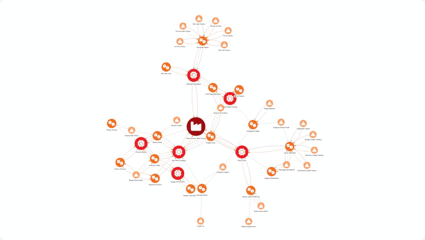
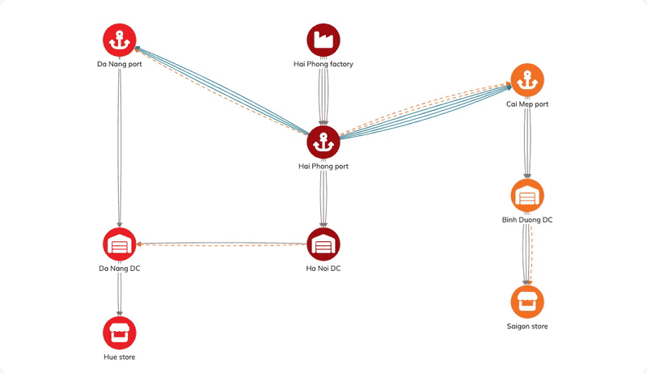
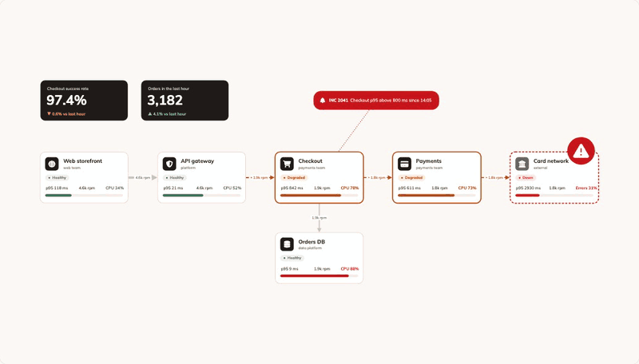
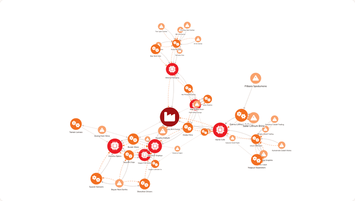
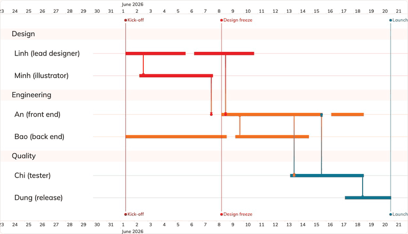
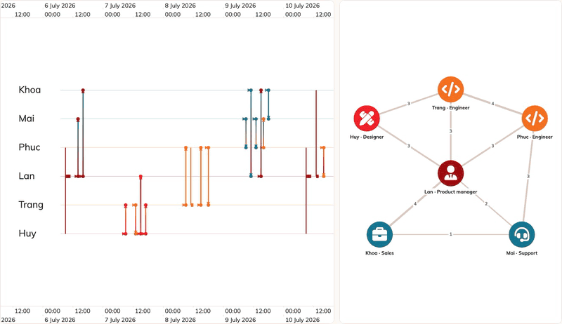

See how your data
connects
A JavaScript SDK for interactive network charts and timelines. Load nodes and links, pick a layout, and let people explore the relationships in their data.
- No runtime dependencies
- TypeScript typings
- React, Vue and Angular wrappers
Every animation here is drawn by Nexus
Each one is recorded from an example that ships in the Examples folder, with its own data.

Automatic layouts
Seven layouts arrange a chart in one call: organic, hierarchy, sequential, radial, lens, structural and tweak.

Aggregate links and combos
Merge parallel links into one with a count, split them by any property, and group nodes into combos that open and close.

Rich node styling
Turn nodes into service cards, KPI tiles and alert badges with multiple labels, font icons, status pills and progress bars.

3D view
Switch the same chart into 3D with one option, then orbit the camera to see structure that overlaps in 2D.

Timelines
Show people or things as rows and events over time: tasks as bars, hand-offs between rows, grouping, markers and zoom.

Linked chart and timeline
Pair a timeline with a chart so a time range filters the network and a selection highlights both views.
Load your data. Pick a layout. Let people explore what connects.
A working chart in three steps
-
1
Install the package
Installation guidenpm install file:./graph-nexus-1.0.0.tgz -
2
Load nodes and links
Loading dataconst chart = await GraphNexus.create('chart'); await chart.load({ type: 'LinkChart', items }); -
3
Lay it out and listen
Events basicsawait chart.layout('organic'); chart.on('click', ({ id }) => show(id));
More you get out of the box
- Graph analyticsDegree, betweenness, closeness, PageRank and shortest paths.
- Map modePlace nodes on a Leaflet map by latitude and longitude.
- Time barA compact histogram that filters the chart by time range.
- Image and PDF exportSave the chart as an image or a PDF report.
- Fonts and font iconsFont Awesome, Material Icons and bundled text fonts.
- WebGL renderingDraw large charts on the GPU, with canvas as a fallback.
Start with your first chart
Install the package and follow the guide. You will have an interactive chart running in a few minutes.